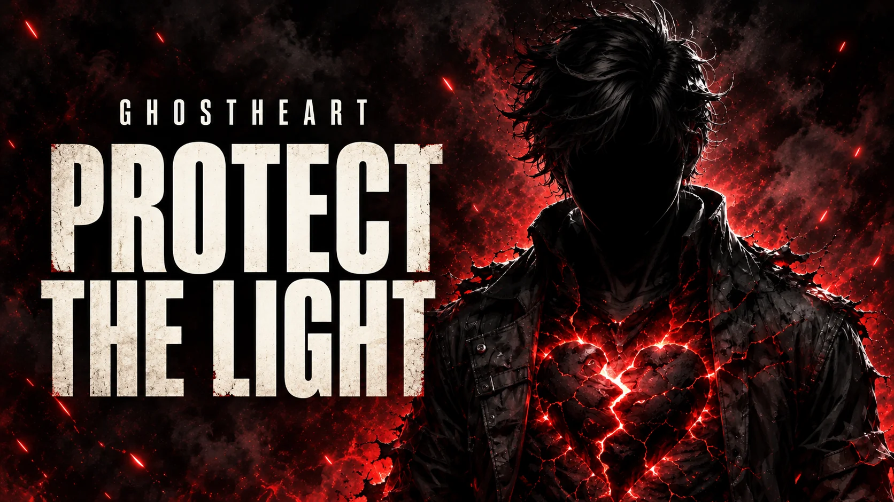

GhostHeart's Purpose 01His five ways forward
Mission
Build. Serve. Change.
Turn survival into work that leaves a door open for someone else.
One heart in motion
Build. Serve. Change.
Turn survival into work that leaves a door open for someone else.

The soundtrack to this path / 7 films
For the judged, the shut out, and the people told to disappear. Songs that stand beside the wounded and defend the light in others.
Inside GhostHeart's Mission
Read the full path from what this purpose answers to how GhostHeart carries it forward.
Mission answers the years GhostHeart was told his life had no direction.
He turns survival into work that serves people who feel unseen.
Build the platforms. Tell the truth. Leave a door open behind him.